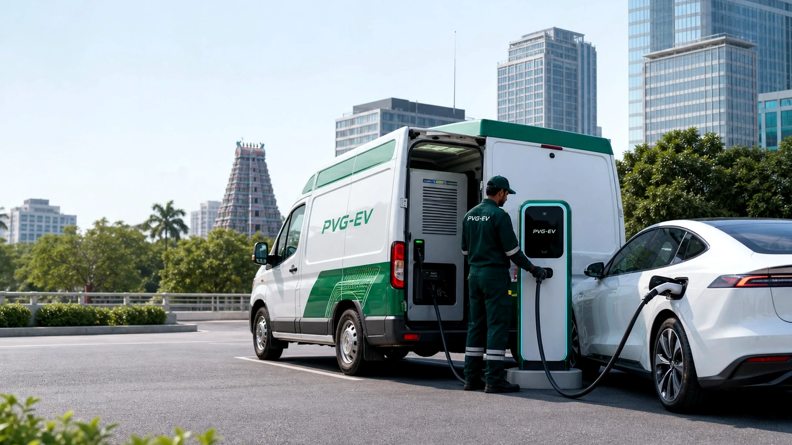
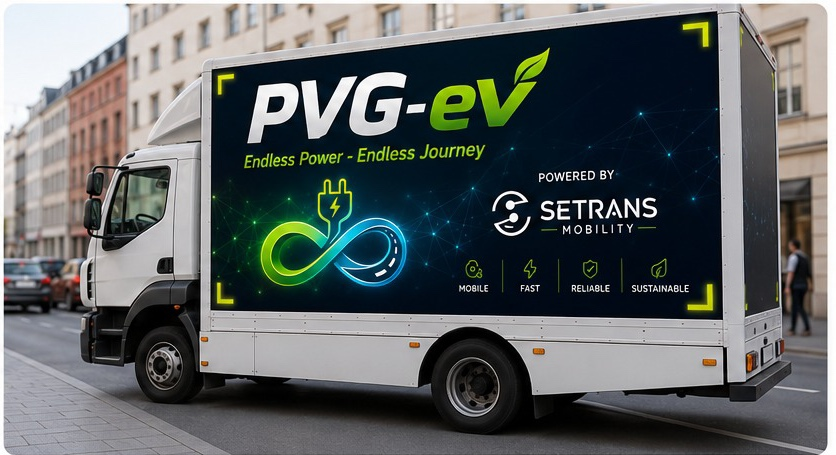

FLAGSHIP SOLUTION
Mobile EV Charging Station for Tamil Nadu
PVG-EV is preparing the introduction of Setrans' vehicle-mounted mobile charging technology for planned pilot deployment in Chennai.
Developed and engineered by Setrans. Introduced, deployed and operated locally by PVG-EV, subject to testing, approval and deployment readiness.
Pilot preparation · Technical values under Setrans review

StatusPilot preparation
AvailabilitySubject to review
TechnologySetrans mobile charging

Applications
Applications and suitability
PVG-EV is collecting requirements for controlled use cases as part of the Chennai pilot preparation.
Fleet charging support
Operational review for fleet bases, depot windows and commercial vehicle charging demand.
Requirement reviewLearn moreLow-charge vehicle support
Assessment for vehicles that need location-based charging support during pilot preparation.
Pilot assessmentSubmit requirementTemporary charging requirements
Review for events, exhibitions and short-term locations without fixed charging access.
Site reviewDiscuss siteCommercial and depot use
Support planning for malls, offices, hotels, yards, depots and parking locations.
Location reviewLearn moreEvents and exhibitions
Temporary EV charging feasibility for controlled venues, launches and exhibitions.
Controlled planningContact PVG-EVInstitutional and corporate support
Charging review for campuses, offices, institutions and vehicle handover environments.
Pilot fit reviewRegister interestResidential and apartment locations
Requirement collection for resident EVs, parking layouts and property access conditions.
Community reviewLearn moreSite and operational support
Interim support planning while permanent charging infrastructure is evaluated.
Readiness reviewDiscuss locationBenefits
Operational benefits and comparison
Operational flexibility
Flexible deployment and support for multiple customer segments during infrastructure development.
- Flexible deployment
- Multiple customer segments
- Scalable operating model
Deployment efficiency
Charging support can be brought closer to where EVs are already parked or operating.
- Reduced travel to charging locations
- Potential to reduce fleet downtime
- Better fit for operating bases
Fixed-charging complement
Mobile charging can support demand while permanent fixed infrastructure continues to develop.
- Temporary charging requirements
- Commercial site support
- Areas awaiting fixed chargers
How Mobile Charging Works
Charging workflow diagram
- 01Requirement submitted
Customer shares vehicle, location and charging need.
- 02Vehicle and location reviewed
PVG-EV checks the use case and operating context.
- 03Site access checked
Entry, parking and safe charging space are assessed.
- 04Charging need evaluated
Battery condition, timing and compatibility are reviewed.
- 05Pilot or service plan created
Feasible requests move into controlled planning.
- 06Deployment scheduled
Approved requirements receive a planned support window.
- 07Mobile unit dispatched
The vehicle-mounted charging unit is sent when approved.
- 08Charging support delivered
EV connection and charging are handled under safe procedure.
- 09Review and follow-up
Session information supports pilot learning and readiness.
Operating Environments
Mobile Charging for Real Operating Environments
All requirements are subject to pilot evaluation, vehicle compatibility and site feasibility.


PVG-EV Access
Request a Mobile Charging Demonstration
Share your vehicle, fleet, location or commercial-site requirement with PVG-EV for pilot-stage review.
Current status: pilot preparation. Availability, timing and coverage are confirmed after review.FAQ
Mobile Charging Station questions
Answers are based on PVG-EV's current pilot-preparation status. Final service availability depends on approval, readiness and operating feasibility.
Contact PVG-EVPVG-EV is preparing the Chennai pilot. The network should not be described as live until operational readiness is confirmed.
Setrans develops and engineers the Mobile Charging Station. PVG-EV introduces, deploys and operates it locally in Tamil Nadu under the collaboration.
Technical specification values must be approved by Setrans before publication.
Yes. Fleet operators can submit requirements for pilot review and suitability assessment.
Yes. Apartment communities, commercial sites and operating locations may register for requirement assessment.
No. Mobile charging is positioned as planned, on-demand and operational charging support where fixed infrastructure may be unavailable, insufficient or impractical.
No. Charging capacity and other technical values will be published only after Setrans review and approval.
Fleet bases, commercial parking locations, apartment communities, dealerships, events and areas awaiting permanent charging infrastructure may be reviewed for suitability.
No. Availability depends on pilot readiness, vehicle compatibility, location conditions, approvals and operating feasibility.
PVG-EV is the local market-development, deployment and operating partner for Tamil Nadu, subject to testing, approval and deployment readiness.
Yes. Use the demonstration request CTA or contact form to share your organisation, location and use case.
Yes. Confirmed technical specifications can be published after Setrans review, approval and deployment readiness checks.